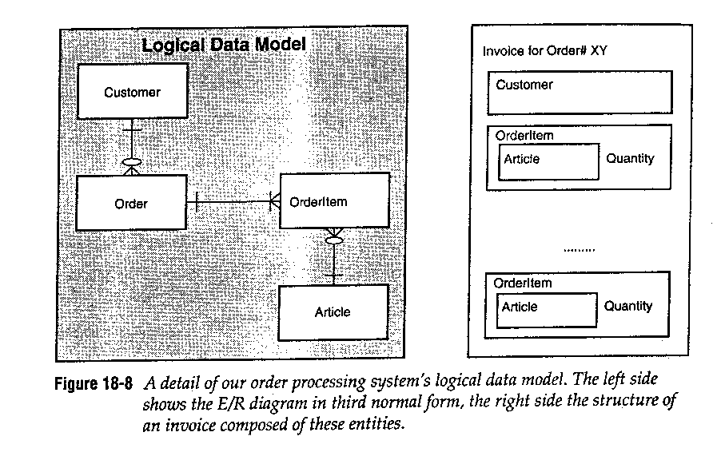
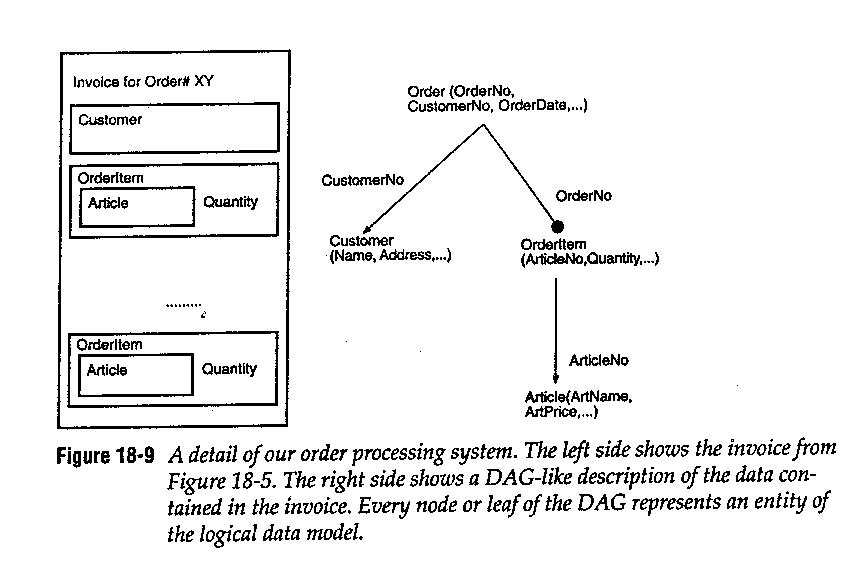
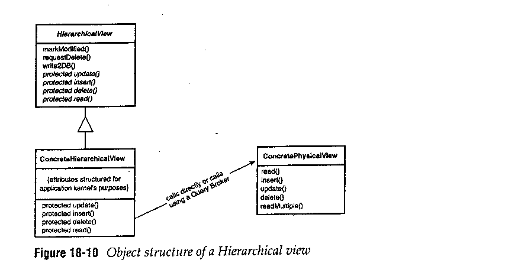

Hierarchical View Pattern
Környezet
A Relational Database Access Layer használata, a logikai és a fizikai
réteg szétválasztása.
Probléma
Milyen interfészt kell az adatbázisnak az alkalmazás felé mutatnia?
Befolyásoló tényezõk
A tervezésnél és a megvalósításnál az alábbi döntéseket kell hozni.
- Komplexitás és hatóerõ a költségek ellenében
...
- Komplexitás a könnyed használhatóság ellenében
...
- Tömeges használat problémája
Nagy adatmodell esetén kézzel megírni ezeket a becsomagoló
osztályokat fáradságos és hibalehetõségekkel teli. Általános
megoldás szükséges, hogy a tömeges gyártás megvalósulhasson: makró,
generátor, templát.
Megoldás


- Induljunk ki a relációs adatmodellbõl! Egy entitástól elindulva
idegen kulcsok mentén navigáljunk! A navigáció során egy aciklikus
irányított gráfot építsünk, amelyet címkézzünk fel!
- Az aciklikus irányított gráf minden csúcsához rendeljünk
egy osztályt!
- Használjunk aggregációt az egy-egy típusú kapcsolatoknál, és
konténert az egy-sok típusú kapcsolatoknál.
Példa

A korábban elkezdett példa osztályszerkezetének megvalósítása
a gráf alapján az alábbiak szerint fog kinézni.
struct Customer {
CustomerKeyType iCustNumber;
};
struct Article {
ArticleNumberType iArticleNumber;
};
struct OrderItem {
Article iArticle;
QuantityType iQuantity;
};
classOrderInvoiceView : public HierarchicalView {
public:
OrderInvoiceView(OrderKeyType anOrder);
OrderKeyType iOrder;
Customer iCustomer;
Vector<OrderItem> iTems;
Money iSumOfInvoice;
protected:
virtual void update(void);
virtual void insert(void);
virtual void remove(void);
virtual void read(void);
};
Ezek után a kód mentes lesz adatbázisfüggõ dolgoktól, és
a logikai adatmodellt követi.
void Order::processInvoice(OrderKeyType anOrder) {
OrderInvoiceView *pInvoice =
(OrderInvoiceView) ViewFactory::getView(anOrder);
ItemIterator itemIter = pInvoice->iItems.begin();
for(;itemIter != iItems.end(); itemIter++) {
pInvoice->iSumOfInvoice+=
(itemIter->iQuantity *
itemIter->iArticle.iArticlePrice);
}
pInvoice->markModified();
}
Következmények
- Öröklõdés és többalakúság
A minta ezeket nem támogatja. Ez megfelelõ a legtöbb üzleti
alkalmazás esetében. :)
- Interfész komplexitása
Az interfész eddig vázolt állapotában minimális. Generálási
lehetõség bevezetése újabb erõfeszítéseket igények, de ez
igen hamar megtérül.
- Interfész stílusa
A logikai adatmodell határozza meg az interfész stílusát,
szemben az objektumrelációs modellel, ahol az objektummodell
követi a belsõ struktúrát.
- Egyszerû használat és az alkalmazásoldali igények
Könnyû lesz használni, hiszen az alkalmazásoldali igényeknek
megfelelõen készült.
- Szétválasztás
Az alkalmazási és az adatbázisréteg teljes szétválasztását
végzi.
Variációk
A minta környezetében minden elhagyható. Ez azonban csak
egyszerûbb alkalmazásnál igaz.